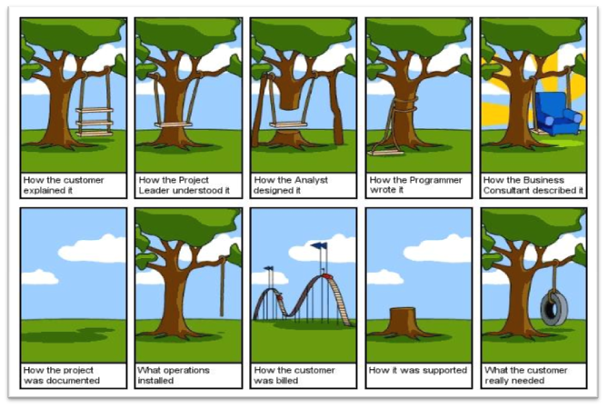
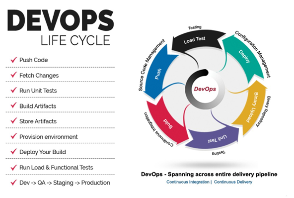
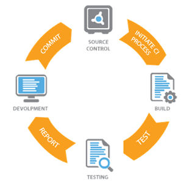
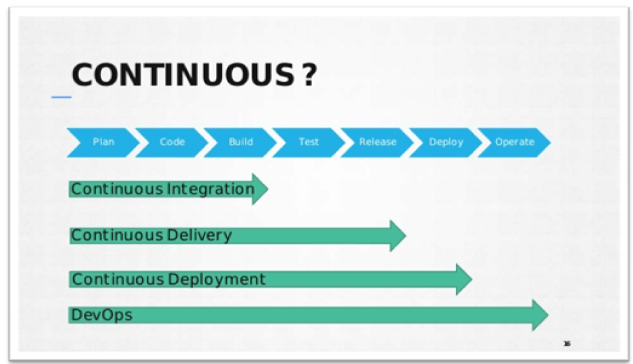
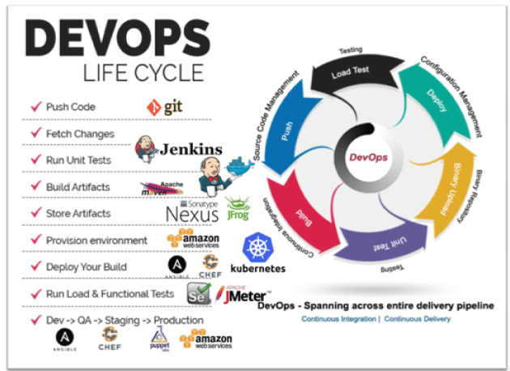

DevOps Introduction
What is DevOps?
I know that's the first answer everybody would be looking for and I will not try to define it.
Because so many people have done it already before me and guess what there are many
different definitions for it. Everybody in the IT industry is talking about it. Organization are
running post to pillars to hire DevOps Engineers and there is a great demand for it.
Some say its automation but some say it’s all about culture, both this belief contradicts with
each other.
Well if its automation then system admins are doing automation from ages and there they used Scripting languages and some tool to achieve it but we did not call it DevOps back then, we just said automation. So, then you would say it’s the culture but if it’s just the culture then why so many automation tools? You would be feeling now that I am confusing you but trust me I am going to prove some points later, just keep reading.
If you are reading this you would somehow related to software industry. Yes, software industry, its only goal is to make software's and deliver it to the user. We can say from the very beginning software industry is divided into two parts and those two parts are Development and Operations. Development focuses on creating and testing software's.
Operations is focussed on delivering those software's to user in form of a website or as an installable software. Once delivered we maintain the software, we deliver new features to our users and make sure the software's stay up and running and healthy.
Job Roles & their Motto.
In Development, we have distinct roles like Developers, Software testers(QA), DB Developers & Architects. Their aim is to develop all the latest and greatest features in the software's,Rapidly or quickly.
In Operations, we have roles like System Admins, Cloud Engineers, DB admins & Security professionals. Here the aim is to keep the systems up and running all the time. Systems on which the software is hosted, like your websites and databases hosted on some servers.
You would have understood by now that both the parties have different aims and goals. One focusses on Quick Change and other focusses on Stability. These are poles apart, if we make quick changes (adding new features continuously) then stability becomes an issue. A system that’s changes continuously will have issues with stability. It’s also true the other way around.
We are living in a world where there are frequent changes to our software’s and apps. Think about it if you are using a software with some old features and some other software comes into the market with the latest & greatest feature you will ofcourse migrate to the new software. So that means if an organizations Dev and Ops team does not give you latest and greatest feature with stability they may lose the business.
So far, I have established few points that I will list below:
- Developers aim to create latest features quickly and rapidly.
- Operations aim is to keep systems stable.
- Quick changes are the user demand.
- User also needs stable software or Apps.
DevOps whole and sole objective is to Deliver latest and greatest features to the user with stability.
It’s no more about just creating new features it’s also about delivering those features to the user otherwise what’s the point of creating if we cannot deliver it on time. So how does DevOps solve that problem? To understand it first we need to understand the development procedure and then we will focus on the operations.
The Problem
After following the procedural document and having their own skills and knowledge operations will deploy it to production. This is where the problem comes in, the deployment may fail, failing the entire service. This happened because of lack of communication between Dev and Ops team. Dev does not understand Ops part and the reverse is also true. So, Ops feel that frequent changes like that may break the system and Dev feels that there is too much restriction on delivering latest changes. We also need to think about security here. Security testing is done before it goes to production. This entire Delivery procedure is slow and manual most of the time.

Think about quick changes now through agile model, it’s not helping the operations team to deliver the code faster. So, no matter how agile development is Operations is still Waterfall. If you think about it for a while you will understand that it’s not the technological problem but the culture problem. Both the parts in Software Industry follow different culture. If this culture is not changed then we will not be able to deliver better feature quickly to the users.
A Very famous joke describes the communication problem.
Enter the DevOps
DevOps solves this problem by changing the culture and making it one culture Dev+Ops. There would be one team, DevOps, with one goal, Rapid delivery with stability.
But how?
First step is to establish communication and collaboration between Dev and Ops. Dev must understand the Ops part and Ops must understand the Development Procedure.

DevOps is the practice of operations and development engineers participating together in the entire service lifecycle, from design through the development process to production support. We have seen previously in waterfall and agile lifecycle, that Development and Operations team are separate, they work separately in their own silos and have very different motto.
DevOps LifeCycle
DevOps Lifecycle includes Development and Operations teams working together. As Developers work on their agile iterations, Ops must work in setting up systems and automating the procedure of deployment. Automation is the key factor here, because agile model gives code repeatedly to deploy it on systems, that’s going to be continuous release of code and that must be continuously deployed to many servers in Dev, QA, Staging & Production environments.
If the code deployment process is not automated then ops team must manually do the deployment. Deployment may include below mentioned procedures.
- Create servers if they don’t exist (On cloud or virtual env).
- Install and setup prerequisites or dependencies on servers.
- Build the software from raw source code (If not done by Developers).
- Deploy software to servers.
- Do config changes to OS and software.
- Setup Monitoring.
- Feedback & Report.
NOTE-All the above process may be less or more depending on the kind of deployment. We will discuss this in later chapters.
As soon as we get a new code change, it must be deployed to Production or at least staging servers.
For this, all the process must be automated, we must automate first Build and Release process which includes.
- Developers push the code in a centralised place.
- Fetch the developers code.
- Validate code.
- Build & test code
- Package it into distributable format(software/artifacts).
- Release it.
Next phase is to deploy this released software to servers, which we discussed already before this.Combining this Build & Release with Deployment process gives us the DevOps Lifecycle which is fully automated.
DevOps Engineers must automate all the above process it should be so seamless that when developers push their code to a central repository it should be fetched and run through all the above process and sends it to production systems.
As I say, “From Code to Prod”.
What is continuous Integration.
Developers will push their code several times in a day to a central repository, every time there is code change it should be pulled, built, tested and notified. There will be continuous code change so continuously we must do these steps. That’s why its Continuous integration. We have a separate chapter for this where it will be discussed in detail. As of now you can understand from above diagram that from step 1 to step 5 is CI.
What is Continuous Delivery?
After CI, we should be also able to deliver our code changes to all the servers in different environments like Dev, QA, Staging. It should be automatically delivered to QA servers where testers will do functional tests, load tests etc. After it passes the QA tests it should automatically deliver the code to staging area where customer or some set of users can check the changes and give approval to deploy it to Production.
As per Wikipedia.
Continuous delivery and DevOps are similar in their meanings and are often conflated, but they are two different concepts. DevOps has a broader scope, and centres around the cultural change, specifically the collaboration of the various teams involved in software delivery (developers, operations, quality assurance, management, etc.), as well as automating the processes in software delivery. Continuous delivery, on the other hand, is an approach to automate the delivery aspect, and focuses on bringing together different processes and executing them more quickly and more frequently. Thus, DevOps can be a product of continuous delivery, and CD flows directly into DevOps.
What is Continuous Deployment?
If the approval is manual process then code delivery is Continuous Delivery but if the approval process becomes automated then after staging, the code change is done directly to Production systems. This is called as Continuous Deployment.
DevOps and Software Development Life Cycle
The DevOps Lifecycle Looks Like This:
- Check in code
- Pull code changes for build
- Run tests (continuous integration server to generate builds & arrange releases): Test individual models, run integration tests, and run user acceptance tests.
- Store artefacts and build repository (repository for storing artefacts, results & releases)
- Deploy and release (release automation product to deploy apps)
- Configure environment
- Update databases
- Update apps
- Push to users – who receive tested app updates frequently and without interruption
- Application & Network Performance Monitoring (preventive safeguard)
- Rinse and repeat
The above process is also called a Code Delivery Pipeline.
Tools for DevOps Lifecycle
We have discussed earlier that everything starts from communication and collaboration between Dev and Ops. Once we understand the culture and process of the project/product we can start working with everyone in designing Code Delivery Pipeline. We must decide what automation tools to use to create entire pipeline. We need to decide where our infrastructure would be hosted? On the cloud, virtual machines or physical machines? In today’s world we have lot of automation tools, but first we need to understand their categories what tools is used for what purpose? If we don’t understand that then we won’t be able to decide where to use them in our code delivery pipeline.
Version Control Systems:
Is used to store the source code, a central place to keep all the code and tracks its version.
For Example:
- Git
- SVN
- Mercurial
- TFS
Build tools:
Build process is where we take the raw source code, test it and build it into a software. This process is automated by build tools.
For Example:
- Maven
- ANT
- MSBuild
- Gradle
- NANT
Continuous Integration Tools:
For Example:
- Jenkins
- Circle CI
- Hudson
- Bamboo
- Teamcity
Configuration Management tools:
Also known as automation tools, can be used to automate system related tasks like software installation, service setup, file push/pull etc. Also used to automate cloud and virtual infrastructure.
For Example:
- Ansible
- Chef
- Puppet
- Saltstack
Cloud computing:
Well this is not any tool but a service accessed by users through internet. A service that provides us with compute resource to create virtual servers, virtual storage, networks etc. There are few providers in the market who gives us public cloud computing services.
For Example:
- AWS
- Azure
- Google Cloud
- Rackspace
Monitoring tools:
Is used to monitor our infrastructure and application health. It sends us notifications and reports through email or other means.
For Example:
- Nagios
- Sensu
- Icinga
- Zenoss
- Monit
Containers & Microservices:
Well to be very frank this cannot be described to you right now. Its described in detail in separate chapter. We need to have lot of Infra & Development knowledge to understand this category of tool.
For Example:
- Docker
- RKT
- Kubernetes
DevOps Lifecycle with images of devops tools.


Summary:
- DevOps cannot be defined in one sentence. DevOps is the culture and also the implementation of automation tools. It depends from which area you are defining it.
- Majority of the Software development is happening with Agile model and that churns out code changes incrementally and frequently.
- Operations does not gel well with the Agile team as both have differences in their principles.
- Agile team wants quick change, Ops wants to keep system stable by not making frequent changes.
- DevOps helps in creating communication, collaboration and integration between Dev and Ops and culture, practices and tools level.
- DevOps Engineer must understand DevOps lifecycle and implement right tool of automation at right place.
Learning automation at every level in the lifecycle is highly important if you want to make a carrier in DevOps domain. You should understand Infrastructure, Development & Automation.Later in the book we will dig more in detail into tools and learn them. We will also understand CI & CD from tools point of view.